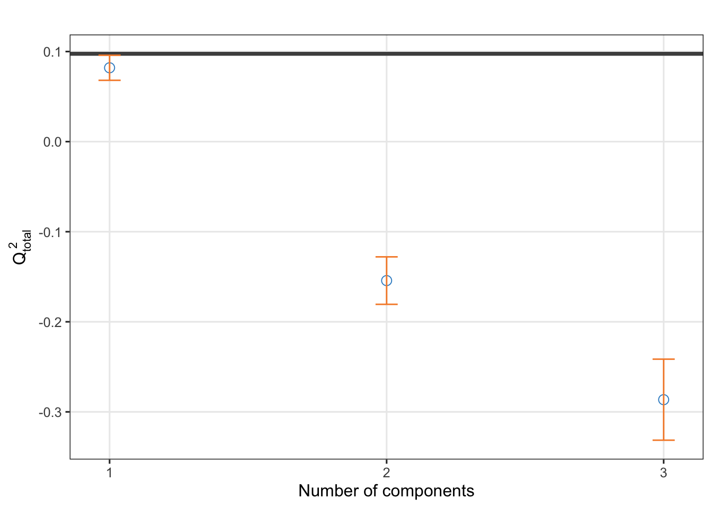
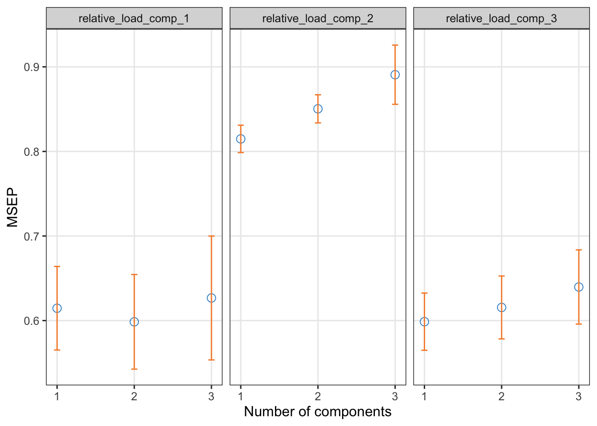

3.6 1.E. Partial least squares
https://mixomicsteam.github.io/mixOmics-Vignette/id_04.html#id_04:spls2
# Start with a subset of merged_df that includes all explanatory variables, like we would for a PCA:
subset_df <- merged_df %>%
filter(datetime >= as.POSIXct('2022-06-10 00:10') & datetime <= as.POSIXct('2022-06-30 23:00'))
expl_df <- subset_df[, c("area_km", "stage_num", 'aspect_mean', "twi_mean", "ndvi_raster_mean", "disttostreams_mean", "percent_Beetle.kill", "percent_Old.Forest", "percent_cut.regenerating", "percent_Tundra","percent_Meadows", "slope_mean")]
# can only use discharge if evaluating streams only
# Convert integer column to numeric
expl_df$stage_num <- as.numeric(expl_df$stage_num)
# response variables
respons_df <- subset_df[, c("relative_load_comp_1", "relative_load_comp_2","relative_load_comp_3")]
#, "PARAF_comp_1", "PARAF_comp_2", "PARAF_comp_3"
expl_df<- scale(expl_df)
respons_df<- scale(respons_df)
# Impute missing values in respons_df and expl_df
#expl_df <- impute.nipals(expl_df, ncomp = 5)Initial exploration with PCA Q² evaluates how well the model can predict unseen data based on the selected number of components. A higher Q² value indicates better predictive performance. Commonly, a Q² value greater than 0.095 is considered an acceptable threshold for a good predictive model.
tune.frac.pls2 <- pls(X = as.matrix(respons_df), Y = expl_df, ncomp = 3, mode = 'regression')
doc.frac.pls2 <- perf(tune.frac.pls2, validation = 'Mfold', folds = 10,
nrepeat = 5)
plot(doc.frac.pls2, criterion = 'Q2.total') None of our components have Q² total greater than 0.095. This suggests that the PLS model may not have enough predictive power to explain the relationship between the response variables and explanatory variables, based on cross-validation.
We know the relationships between individual response variables and explanatory variables are strong. PLS does not assume normality of the data, though scaling does seem to help the Q2.
From the tutorial: “We now set a grid of values - thin at the start, but also restricted to a small number of genes for a parsimonious model, which we will test for each of the two components in the tune.spls() function, using the MAE criterion.” So, in simpler terms, I think this means this piece of code is tuning a partial least squares (PLS) regression model using cross-validation to find the best number of variables to include in the model. I want to include all response variables at this point, so this is adapted from the tutorial:
# Define the number of response variables to keep (all 3 in this case)
list.keepY <- ncol(respons_df) # Assuming Y has 3 columns, this will set it to 3
# Define a list of explanatory variables to test
list.keepX <- c(seq(5, 12, 1)) # As before, testing selection from 5 to 50 variables in X
# Run the tuning with only list.keepX cross-validated
tune.spls.doc <- tune.spls(expl_df, respons_df,
test.keepX = list.keepX,
ncomp = 2,
nrepeat = 1,
folds = 10,
mode = 'regression',
measure = 'cor',
BPPARAM = BiocParallel::SnowParam(workers = 14) # Optional parallelization
)## Warning: <anonymous>: ... may be used in an incorrect context:
## spls(X = X, Y = Y, keepX = c(choice.keepX, keepX), keepY = c(choice.keepY,
## keepY), ncomp = comp, mode = mode, ...)
## Warning: <anonymous>: ... may be used in an incorrect context:
## spls(X = X, Y = Y, keepX = c(choice.keepX, keepX), keepY = c(choice.keepY,
## keepY), ncomp = comp, mode = mode, ...)
# Standardize the data
X_scaled <- scale(expl_df)
# Perform PCA
pca_result <- prcomp(X_scaled, center = TRUE)
# Check variance explained
summary(pca_result)## Importance of components:
## PC1 PC2 PC3 PC4 PC5 PC6 PC7 PC8 PC9 PC10
## Standard deviation 2.1860 1.4916 1.3046 1.1224 0.91363 0.68046 0.6681 0.36959 0.3305 0.18584
## Proportion of Variance 0.3982 0.1854 0.1418 0.1050 0.06956 0.03859 0.0372 0.01138 0.0091 0.00288
## Cumulative Proportion 0.3982 0.5836 0.7254 0.8304 0.89997 0.93856 0.9758 0.98714 0.9962 0.99911
## PC11 PC12
## Standard deviation 0.10306 8.348e-11
## Proportion of Variance 0.00089 0.000e+00
## Cumulative Proportion 1.00000 1.000e+00# Choose the number of components (e.g., first 2 PCs)
X_pca <- pca_result$x[, 1:3]
# Run PLS with PCA components
tune.frac.pls <- pls(X = X_pca, Y = respons_df, ncomp = 3, mode = 'regression')## Warning: The SGCCA algorithm did not converge# Evaluate model performance
doc.frac.pls2 <- perf(tune.frac.pls, validation = 'Mfold', folds = 10, nrepeat = 5)
plot(doc.frac.pls2)